Pokémon Alvorada: revisão de combate e interface
Capturas reais do jogo em 844 × 390. O combate continua em tempo real e os personagens usam a apresentação FireRed. Abrir o jogo · Relatório e testes
Menus e mapa
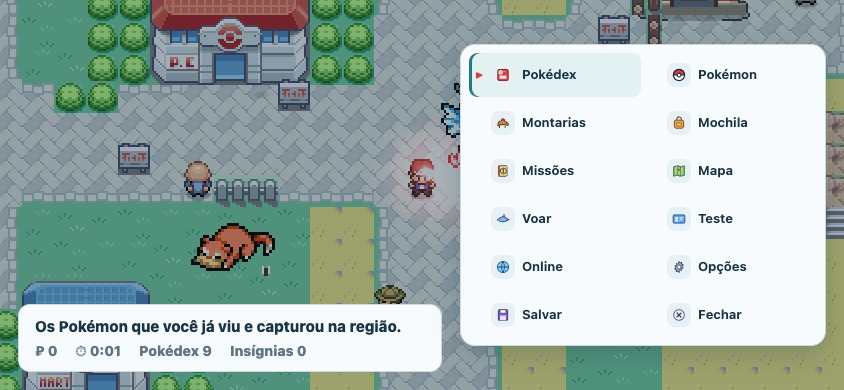
Menu com todas as ações acessíveis, incluindo Salvar e Fechar.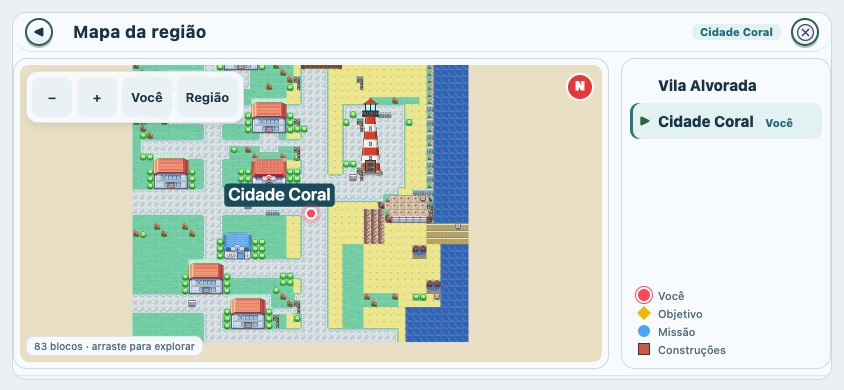
Mapa detalhado, aberto ao tocar no minimapa.Montaria: correção do treinador escondido
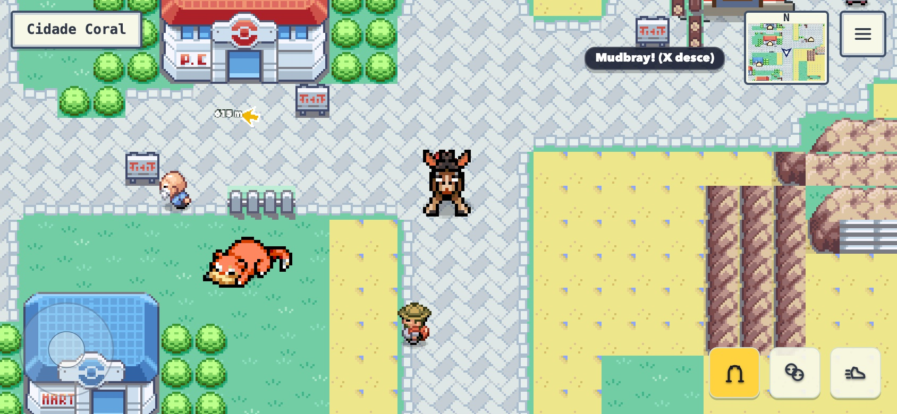
Antes.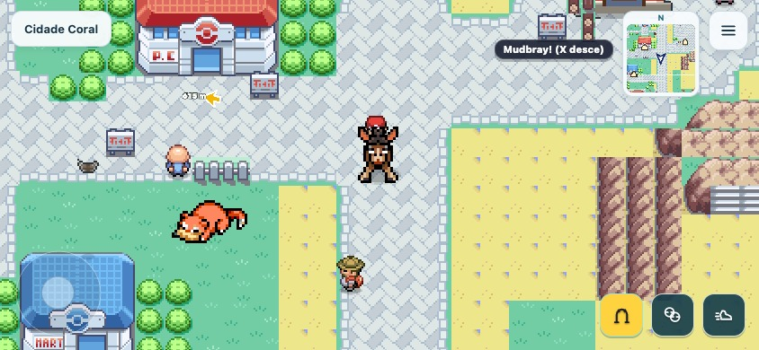
Depois: pose sentada e aparência original.Cidade Coral, no mesmo ponto
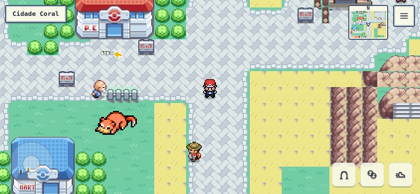
Antes.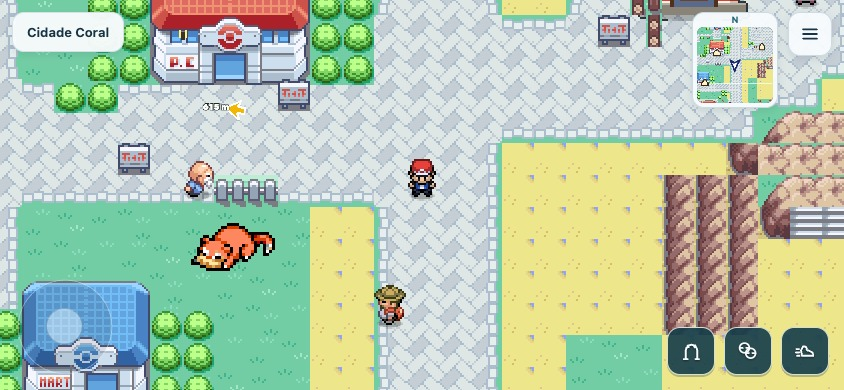
Depois. Interface mais limpa; cenário e roteiro preservados.Rota: percurso de controle
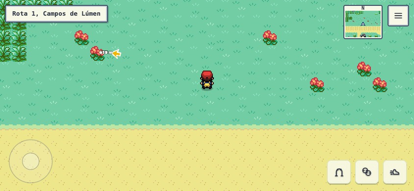
Antes.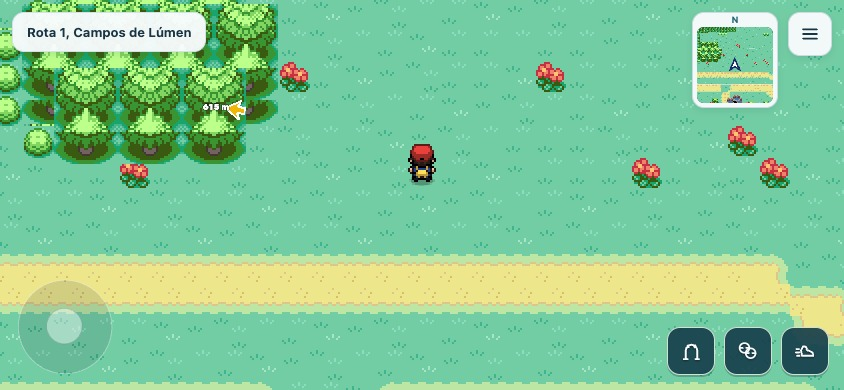
Depois. Trilhas e vegetação foram reorganizadas somente onde há circulação segura.Batalha selvagem, em ação
Gyarados contra Arcanine selvagem. São três momentos do motor real, com IA, colisão e dano ativos.
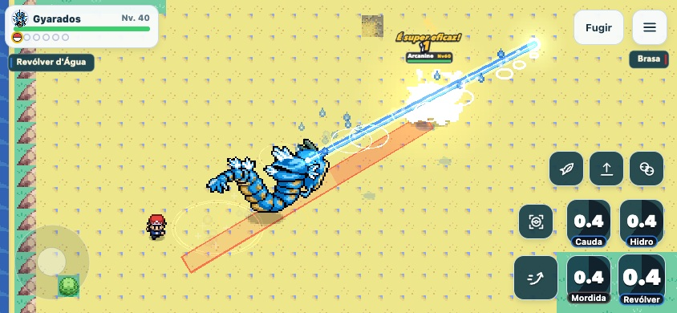
Jato, impacto e aviso do ataque adversário.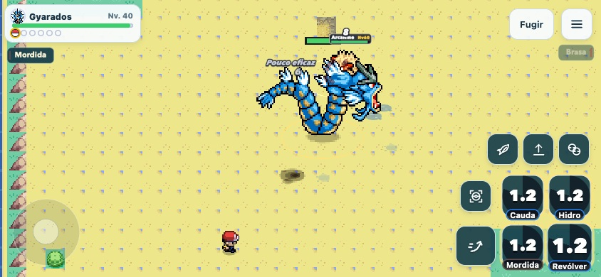
Aproximação e golpe físico.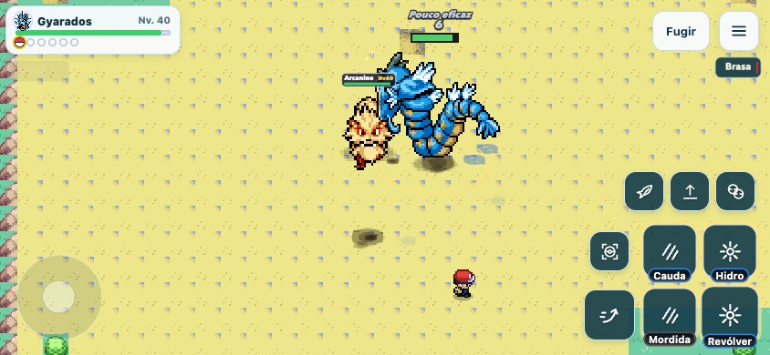
Reposicionamento dos dois combatentes.O relatório registra os limites desta rodada. Estas capturas não substituem a validação em um iPhone físico.